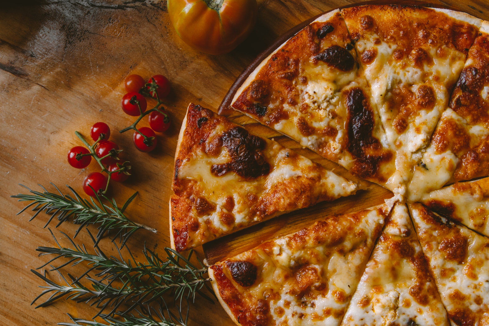

Have you ever made a pizza from scratch?
Yeah, but like have you really thought about it?
Like, how if you put the sauce on first, before you make the base it doesn't work?
Or if you put the cheese on then the sauce it's messed up too.
Making a pizza is similar to coding. There are
certain things we have to do first. Like making the
base, letting it rise, mould the base out, add the
sauce, add the toppings, add the cheese, bake, and cut
and serve. Not all pizzas end up the same, but they do
start out in the same way as long as you follow the
order correctly. You can have everything you need to
make many different pizzas using the same base
structure that is set up before hand.
This is how you make a pizza
There are some specific steps you need to take to make a pizza, we will list them here
- Make the pizza base
- Add the tomato sauce
- Add the toppings
- Add the cheese
- Bake
- Cut
- Serve
The toppings are different, they change for every occasion and taste. There is no order to toppings, so we will list them like this.
- Pepperoni
- Olives
- Peppers
- Mushrooms
- Onions
- Jalepenos
- Pineapple (Only if you are crazy)
- Bacon
Here is the Wikipedia article about pizza.

But wait, there's something I like even more than pizza. It's a cake.